कक्षा 11 राजनीति विज्ञान (राजनीतिक सिद्धांत)
अध्याय 16: नागरिकता
(CITIZENSHIP)
नागरिकता की परिभाषा, पूर्ण व समान सदस्यता का अर्थ एवं नागरिक बनाम विदेशी
नागरिकता किसी व्यक्ति और उसके राज्य के बीच का वह कानूनी और राजनीतिक संबंध है, जिसके तहत व्यक्ति को उस राजनीतिक समुदाय की पूर्ण और समान सदस्यता (Full and Equal Membership) प्राप्त होती है। नागरिकता व्यक्ति को पहचान, सुरक्षा और अधिकार प्रदान करती है।
📌 मुख्य सैद्धांतिक परिभाषा: "नागरिकता किसी राजनीतिक समुदाय (राज्य) की पूर्ण और समान सदस्यता है, जिसके अंतर्गत नागरिकों को राज्य द्वारा अधिकार प्राप्त होते हैं और नागरिक राज्य के प्रति निष्ठा व कर्तव्य निभाते हैं।"
💡 ऐतिहासिक परिप्रेक्ष्य (प्राचीन एथेंस बनाम आधुनिक लोकतंत्र): प्राचीन यूनान (एथेंस) में नागरिकता केवल स्वतंत्र पुरुषों तक सीमित थी; महिलाओं, दासों और विदेशियों को नागरिक नहीं माना जाता था। आधुनिक लोकतंत्र में नागरिकता सार्वभौमिक है—यहाँ धर्म, जाति, लिंग या धन के आधार पर किसी को बाहर नहीं रखा जा सकता।
नागरिकता के तीन प्रमुख आधार स्तंभ:
- पूर्ण सदस्यता (Full Membership): राज्य के किसी भी नागरिक को दोयम दर्जे का नहीं माना जा सकता; सभी को समान दर्जा प्राप्त है।
- समान अधिकार (Equal Rights): जाति, धर्म, लिंग या जन्मस्थान के आधार पर किसी भी नागरिक के साथ भेदभाव नहीं किया जा सकता।
- पारस्परिक दायित्व (Mutual Obligations): राज्य नागरिक के जीवन और अधिकारों की रक्षा करता है, और नागरिक देश के कानून का पालन व कर भुगतान करता है।
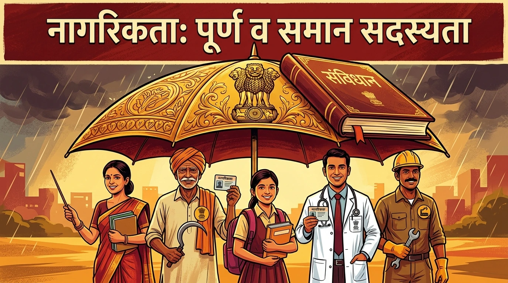
🎨 कार्टून विश्लेषण: नागरिकता की अवधारणा—पूर्ण व समान सदस्यता का सुरक्षा छत्र
चित्र का मुख्य संदेश: नागरिकता एक ऐसा पहचान पत्र और सुरक्षात्मक आवरण है जो देश के प्रत्येक व्यक्ति को बराबरी का दर्जा, मतदान की शक्ति और सम्मानजनक पहचान प्रदान करता है।
नागरिक और विदेशी (Citizen vs Alien) में मुख्य अंतर:
किसी भी देश की भौगोलिक सीमा के भीतर रहने वाले लोगों को दो वर्गों में विभाजित किया जाता है—नागरिक (Citizens) और विदेशी (Aliens)।
- राजनीतिक अधिकार: वोट देने, चुनाव लड़ने और उच्च संवैधानिक पदों (राष्ट्रपति, न्यायाधीश आदि) पर केवल नागरिक ही आसीन हो सकते हैं, विदेशी नहीं।
- मौलिक अधिकार: अनुच्छेद 15, 16, 19, 29 और 30 केवल भारतीय नागरिकों को प्राप्त हैं; जबकि अनुच्छेद 14 और 21 विदेशियों को भी प्राप्त हैं।
- राज्य के प्रति निष्ठा: नागरिकों की अपने देश के प्रति स्थायी राजनीतिक निष्ठा (Allegiance) होती है।
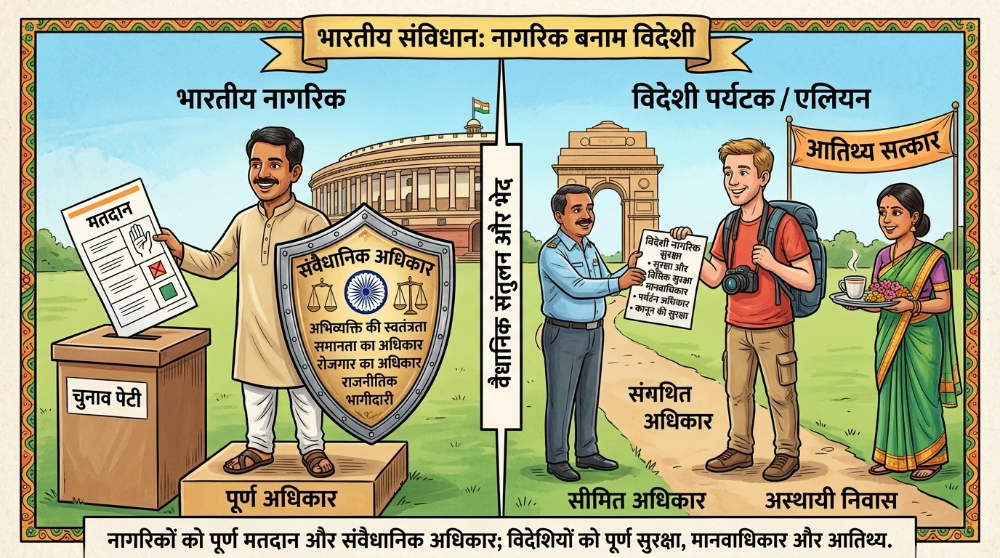
🎨 कार्टून विश्लेषण: नागरिक और विदेशी—अधिकारों और दायित्वों की सीमा रेखा
चित्र का मुख्य संदेश: विदेशी अतिथियों को मानवीय सुरक्षा और कानून का संरक्षण मिलता है, लेकिन शासन में भागीदारी और मतपेटी की शक्ति केवल देश के नागरिकों के हाथों में होती है।
टी.एच. मार्शल का नागरिकता का त्रिविध सिद्धांत (T.H. Marshall)
प्रसिद्ध ब्रिटिश समाजशास्त्री टी.एच. मार्शल ने 1950 में अपनी पुस्तक 'Citizenship and Social Class' में नागरिकता के ऐतिहासिक विकास को तीन चरणों में समझाया:
मार्शल के नागरिकता के तीन अधिकार:
- 1. नागरिक अधिकार (18वीं सदी): व्यक्तिगत स्वतंत्रता, विचार व भाषण की स्वतंत्रता, संपत्ति का अधिकार और निष्पक्ष न्याय का अधिकार।
- 2. राजनीतिक अधिकार (19वीं सदी): मताधिकार, चुनाव लड़ने का अधिकार और संसद/विधानसभा में भागीदारी।
- 3. सामाजिक-आर्थिक अधिकार (20वीं सदी): न्यूनतम आर्थिक सुरक्षा, शिक्षा, स्वास्थ्य, आवास और गरिमापूर्ण जीवन स्तर का अधिकार।
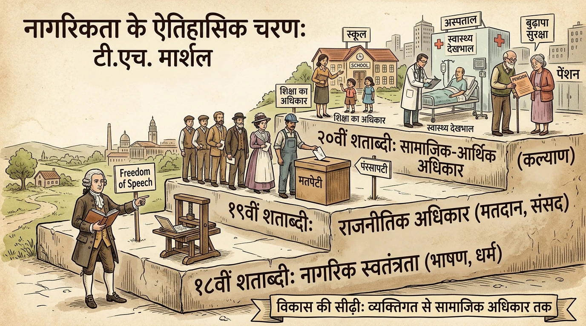
🎨 कार्टून विश्लेषण: टी.एच. मार्शल—नागरिकता की 3 ऐतिहासिक सीढ़ियां
चित्र का मुख्य संदेश: नागरिकता केवल वोट देने तक सीमित नहीं है; 18वीं सदी की कानूनी स्वतंत्रता, 19वीं सदी का मताधिकार और 20वीं सदी की सामाजिक सुरक्षा मिलकर ही पूर्ण नागरिकता बनाते हैं।
प्रवासी मजदूरों के अधिकार और देश में स्वतंत्र आवागमन
भारतीय संविधान के अनुच्छेद 19(1)(d) और 19(1)(e) के अनुसार प्रत्येक नागरिक को देश के किसी भी राज्य में जाने, रहने और काम करने का पूर्ण अधिकार है।
💡 व्यावहारिक उदाहरण (प्रवासी मजदूर और राष्ट्रीय अर्थव्यवस्था): बिहार, उत्तर प्रदेश, राजस्थान या ओडिशा से दिल्ली, मुंबई या बेंगलुरु जाने वाले मजदूर केवल आजीविका नहीं कमाते, बल्कि वे उन राज्यों के उद्योग, निर्माण और सेवा क्षेत्र की रीढ़ हैं। उन्हें किसी भी राज्य में 'विदेशी' नहीं माना जा सकता।
प्रवासियों के बुनियादी अधिकार:
- अबाध आवागमन: देश के किसी भी हिस्से में रोजगार के लिए जाने पर कोई राज्य पाबंदी नहीं लगा सकता।
- राशन और सामाजिक सुरक्षा: 'वन नेशन, वन राशन कार्ड' जैसी योजनाओं से प्रवासियों को कहीं भी खाद्य सुरक्षा का अधिकार।
- समान मजदूरी: बाहरी राज्य के मजदूर होने के कारण कम मजदूरी देना या शोषण करना कानूनन अपराध है।
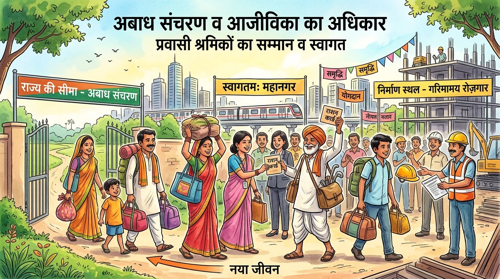
🎨 कार्टून विश्लेषण: प्रवासी मजदूर—देश की प्रगति के पहिए और समान नागरिक
चित्र का मुख्य संदेश: भारत का हर नागरिक अपने ही देश के किसी भी कोने में स्वाभिमान और पूर्ण नागरिक अधिकारों के साथ काम करने और रहने का हकदार है।
बाहरी बनाम भीतरी (Insider vs Outsider) विवाद और राष्ट्रीय एकता
कई बार स्थानीय लोग रोजगार और संसाधनों पर केवल स्थानीय लोगों (धरतीपुत्रों / Sons of the Soil) का हक होने का दावा करते हैं, जो साझा राष्ट्रीय नागरिकता की भावना के विपरीत है।
स्थानीयता बनाम राष्ट्रीय नागरिकता:
- साझा राष्ट्रीय पहचान: भारत में एकल नागरिकता (Single Citizenship) है; यहाँ कोई राज्य की अलग नागरिकता नहीं होती।
- संकीर्ण क्षेत्रवाद पर रोक: भाषा या क्षेत्र के नाम पर बाहरी नागरिकों पर हिंसा या भेदभाव संविधान के मूल ढांचे पर हमला है।
- स्थानीय चिंताओं का लोकतांत्रिक समाधान: स्थानीय युवाओं के लिए कौशल विकास और रोजगार के अवसर बढ़ाना, न कि दूसरे राज्यों के नागरिकों का बहिष्कार करना।
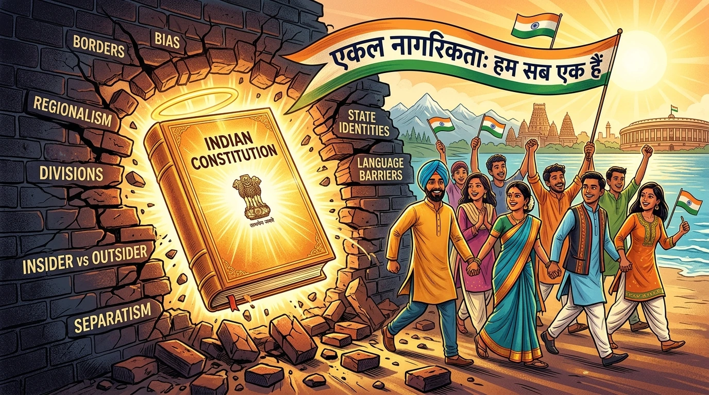
🎨 कार्टून विश्लेषण: एकल नागरिकता—संकीर्ण दीवारों को तोड़ती राष्ट्रीय एकता
चित्र का मुख्य संदेश: 'हम सब एक हैं'—स्थानीयता और क्षेत्रवाद की संकीर्ण दीवारों से ऊपर उठकर संविधान की एकल नागरिकता पूरे भारत को एक सूत्र में बांधती है।
झुग्गी-झोपड़ी वासियों और फेरीवालों के अधिकार
शहरों में रहने वाले लाखों झुग्गी-झोपड़ी निवासी, रेहड़ी-पटरी वाले और फेरीवाले अनौपचारिक अर्थव्यवस्था को चलाते हैं, लेकिन अक्सर उन्हें बुनियादी नागरिक सुविधाओं से वंचित रखा जाता है।
💡 व्यावहारिक उदाहरण (आजीविका बनाम शहरी सौंदर्य): ओल्गा टेलिस बनाम बॉम्बे नगर निगम (1985) के प्रसिद्ध मामले में सर्वोच्च न्यायालय ने फैसला दिया कि "फुटपाथ पर दुकान लगाने वालों को बिना वैकल्पिक व्यवस्था के हटाना उनके जीवन के अधिकार (अनुच्छेद 21) का हनन है।"
शहरी निर्धनों के नागरिक अधिकार:
- आजीविका का अधिकार: स्ट्रीट वेंडर्स एक्ट 2014 के तहत वेंडिंग जोन और आजीविका की सुरक्षा।
- बुनियादी नागरिक सुविधाएं: स्वच्छ पेयजल, शौचालय, बिजली और बच्चों के लिए सरकारी स्कूल पाना उनका अधिकार है।
- पुनर्वास की गारंटी: विकास योजनाओं के नाम पर बेदखल करने से पहले पक्के मकानों में उचित पुनर्वास अनिवार्य।
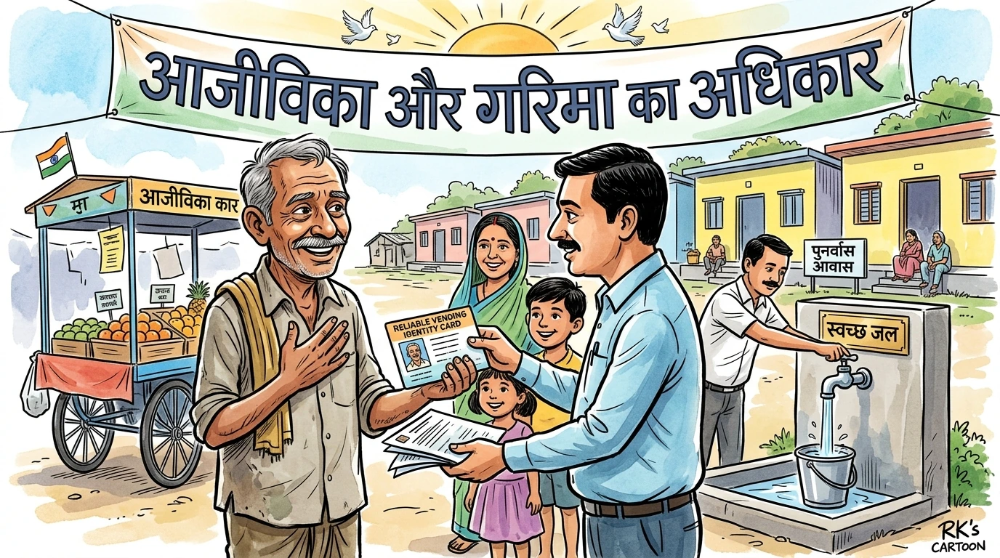
🎨 कार्टून विश्लेषण: शहरी निर्धनों की नागरिकता—गरिमापूर्ण आजीविका और आवास
चित्र का मुख्य संदेश: शहर केवल चमचमाती इमारतों का नाम नहीं है; शहर को जीवित रखने वाले फेरीवालों और मजदूरों को भी सम्मान, छत और समान नागरिक अधिकार मिलने चाहिए।
समान अधिकार और सांस्कृतिक विविधता
समान नागरिकता का अर्थ यह नहीं है कि सभी पर एक जैसी संस्कृति थोप दी जाए। वास्तविक समान नागरिकता वही है जहाँ प्रत्येक समुदाय को अपनी विशिष्ट पहचान बनाए रखने का अधिकार हो।
विविधता और समान नागरिकता:
- सांस्कृतिक स्वायत्तता: विभिन्न भाषाई, धार्मिक और जनजातीय समूहों को अपनी परंपराओं और त्योहारों को मनाने की पूर्ण स्वतंत्रता।
- विशेष जरूरतों की पूर्ति: समान अधिकार का अर्थ यह है कि दिव्यांगों के लिए रैंप हों, बुजुर्गों के लिए पेंशन हो और वंचितों के लिए विशेष अवसर हों।
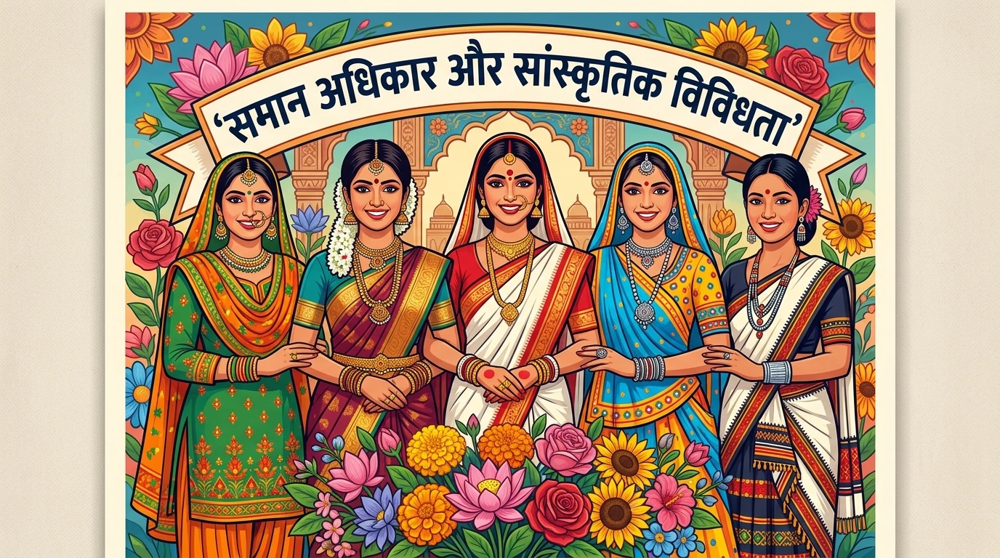
🎨 कार्टून विश्लेषण: समान अधिकार—विविध संस्कृतियों का सम्मान और समावेश
चित्र का मुख्य संदेश: भारतीय नागरिकता का गुलदस्ता सभी रंगों, भाषाओं और संस्कृतियों के खिलने से ही सुंदर बनता है।
महिलाओं और जनजातियों की समान नागरिकता
ऐतिहासिक रूप से उपेक्षित महिलाओं और वनवासी जनजातियों को मुख्यधारा में लाकर ही सच्ची लोकतांत्रिक नागरिकता स्थापित हो सकती है।
सशक्तिकरण के प्रमुख कदम:
- लैंगिक समानता: पैतृक संपत्ति में बेटियों का समान अधिकार और संसद/पंचायतों में महिलाओं का प्रतिनिधित्व।
- वन अधिकार अधिनियम 2006: आदिवासी समुदायों को उनके पारंपरिक जंगलों और भूमि पर कानूनी अधिकार।
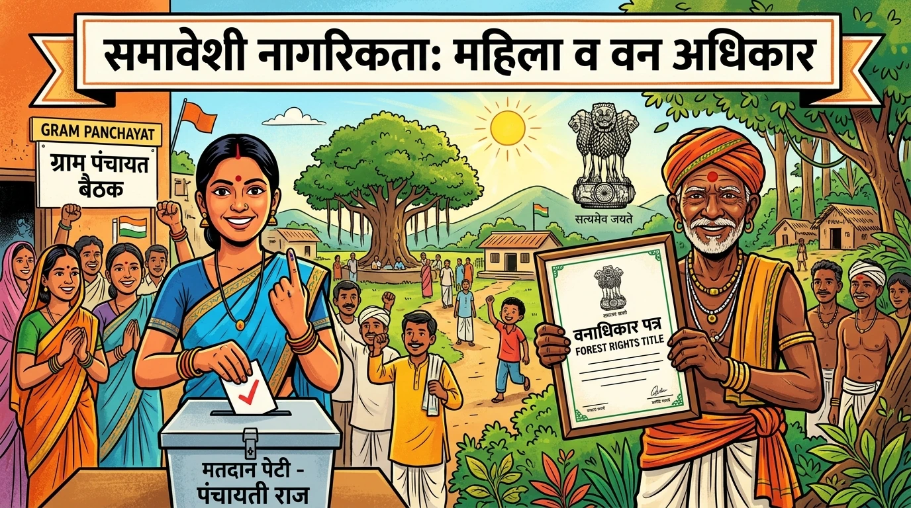
🎨 कार्टून विश्लेषण: समावेशी नागरिकता—महिलाएं और जनजातियां राष्ट्र के केंद्र में
चित्र का मुख्य संदेश: जब देश की आधी आबादी (महिलाएं) और प्रकृति के रक्षक (जनजातियां) सशक्त होते हैं, तभी देश की नागरिकता पूर्ण होती है।
लोकतांत्रिक राष्ट्र-राज्य और भारतीय नागरिकता की धर्मनिरपेक्ष पहचान
कई देशों ने नागरिकता को किसी एक धर्म या नस्ल से जोड़ा, लेकिन भारत के स्वतंत्रता सेनानियों और संविधान निर्माताओं ने एक धर्मनिरपेक्ष, समावेशी और बहुलवादी नागरिकता का विकल्प चुना।
भारतीय नागरिकता की विशिष्ट विशेषताएं:
- धर्मनिरपेक्ष आधार: नागरिकता प्राप्त करने में किसी व्यक्ति के धर्म का कोई भेदभाव नहीं किया जाता।
- एकल नागरिकता: पूरा देश एक है—नागरिक सिर्फ 'भारतीय' है, किसी राज्य का अलग नागरिक नहीं।
- सार्वभौमिक मताधिकार: 18 वर्ष से ऊपर के सभी नागरिकों को बिना किसी संपत्ति या शिक्षा की शर्त के वोट का समान अधिकार।
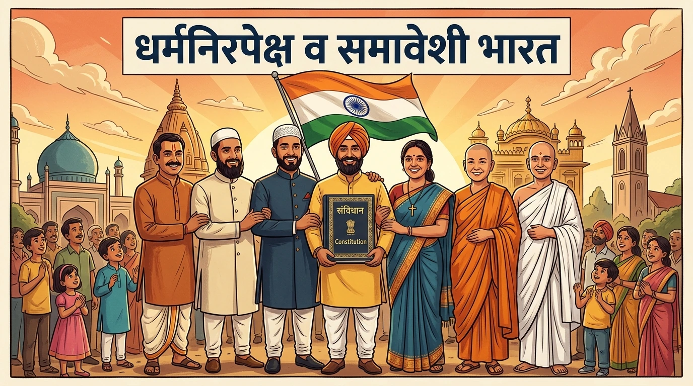
🎨 कार्टून विश्लेषण: धर्मनिरपेक्ष व समावेशी भारत—साझा लोकतांत्रिक पहचान
चित्र का मुख्य संदेश: तिरंगे के नीचे सभी धर्मों और भाषाओं के लोग एक समान भारतीय नागरिक हैं—यही 'अनेकता में एकता' की असली शक्ति है।
भारतीय संविधान में नागरिकता संबंधी प्रावधान (अनुच्छेद 5 से 11)
भारतीय संविधान के भाग II में अनुच्छेद 5 से 11 तक नागरिकता के बुनियादी सिद्धांतों का उल्लेख किया गया है:
नागरिकता के प्रमुख संवैधानिक अनुच्छेद:
- अनुच्छेद 5: संविधान के प्रारंभ (26 जनवरी 1950) पर भारत के मूल निवासियों को नागरिकता।
- अनुच्छेद 6: पाकिस्तान से भारत आने वाले (प्रवासी) व्यक्तियों की नागरिकता के अधिकार।
- अनुच्छेद 7: पाकिस्तान जाने और फिर लौटकर भारत आने वालों की नागरिकता।
- अनुच्छेद 8: भारत से बाहर रहने वाले भारतीय मूल के व्यक्तियों (PIO/NRI) के अधिकार।
- अनुच्छेद 9: विदेशी नागरिकता स्वेच्छा से लेने पर भारतीय नागरिकता का स्वतः अंत।
- अनुच्छेद 10: नागरिकता के अधिकारों की निरंतरता (कानून के अनुसार सुरक्षा)।
- अनुच्छेद 11: संसद को नागरिकता के संबंध में कानून बनाने की सर्वोच्च शक्ति (नागरिकता अधिनियम 1955)।
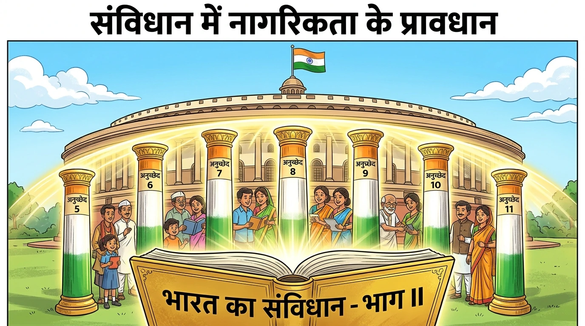
🎨 कार्टून विश्लेषण: संविधान का भाग II—अनुच्छेद 5 से 11 के सुरक्षा स्तंभ
चित्र का मुख्य संदेश: भारतीय संविधान संसद को नागरिकता के नियम तय करने का सर्वोच्च अधिकार देता है और हर नागरिक को कानूनी सुरक्षा प्रदान करता है।
भारतीय नागरिकता की प्राप्ति और समाप्ति के नियम (नागरिकता अधिनियम 1955)
नागरिकता अधिनियम 1955 के तहत कोई भी व्यक्ति 5 वैधानिक तरीकों से भारतीय नागरिकता प्राप्त कर सकता है, तथा 3 मुख्य आधारों पर नागरिकता समाप्त हो सकती है:
नागरिकता प्राप्ति के 5 मार्ग:
- 1. जन्म द्वारा (By Birth): भारत में जन्म लेने वाले बच्चों को कानून के अनुसार नागरिकता।
- 2. वंश द्वारा (By Descent): विदेश में जन्मे बच्चे के माता-पिता में से किसी एक के भारतीय होने पर।
- 3. पंजीकरण द्वारा (By Registration): भारतीय मूल के व्यक्तियों या भारतीय नागरिकों से विवाह करने वालों द्वारा आवेदन।
- 4. देशीयकरण द्वारा (By Naturalisation): विदेशी नागरिकों द्वारा भारत में निश्चित अवधि तक रहने और संविधान की 8वीं अनुसूची की किसी भाषा का ज्ञान होने पर।
- 5. क्षेत्र समामेलन द्वारा (By Incorporation of Territory): किसी नए भूभाग (जैसे गोवा, पुडुचेरी, सिक्किम) के भारत में मिलने पर वहाँ के निवासियों को नागरिकता।
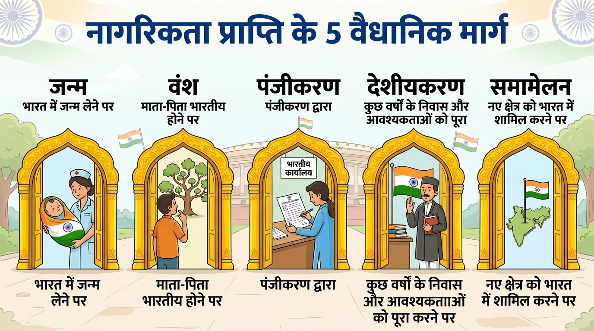
🎨 कार्टून विश्लेषण: नागरिकता प्राप्ति के 5 द्वार—जन्म, वंश, पंजीकरण, देशीयकरण व क्षेत्र समामेलन
चित्र का मुख्य संदेश: नागरिकता अधिनियम 1955 ने भारत की सदस्यता पाने के 5 स्पष्ट और पारदर्शी नियम निर्धारित किए हैं।
नागरिकता समाप्ति के 3 मुख्य आधार:
- 1. स्वेच्छा से त्याग (Renunciation): जब कोई नागरिक खुद अपनी भारतीय नागरिकता छोड़ देता है।
- 2. बर्खास्तगी / पर्यावसान (Termination): दूसरे देश की नागरिकता लेने पर भारतीय नागरिकता स्वतः समाप्त हो जाती है।
- 3. सरकार द्वारा वंचित करना (Deprivation): देशद्रोह, फर्जी दस्तावेज से नागरिकता लेने या युद्ध के समय शत्रु देश की मदद करने पर।
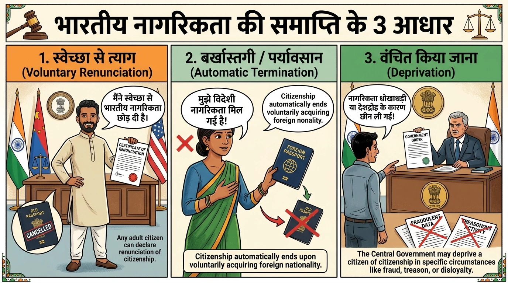
🎨 कार्टून विश्लेषण: नागरिकता समाप्ति—त्याग, पर्यावसान और वंचित किया जाना
चित्र का मुख्य संदेश: नागरिकता एक अनमोल सम्मान है; राष्ट्र के प्रति निष्ठा और नियमों का पालन ही इसकी निरंतरता की गारंटी है।
एकल नागरिकता बनाम दोहरी नागरिकता (भारत vs अमेरिका)
अमेरिका और स्विट्जरलैंड जैसे देशों में 'दोहरी नागरिकता' (Dual Citizenship) होती है, जहाँ नागरिक देश के साथ-साथ अपने राज्य (जैसे कैलिफोर्निया या न्यूयॉर्क) का भी अलग नागरिक होता है।
भारत में एकल नागरिकता का महत्व:
- राष्ट्रीय अखंडता: भारत में कोई प्रांतीय नागरिकता नहीं है; सभी केवल 'भारतीय' हैं।
- भेदभाव का अंत: किसी भी राज्य का नागरिक पूरे देश में समान अधिकारों का हकदार है।
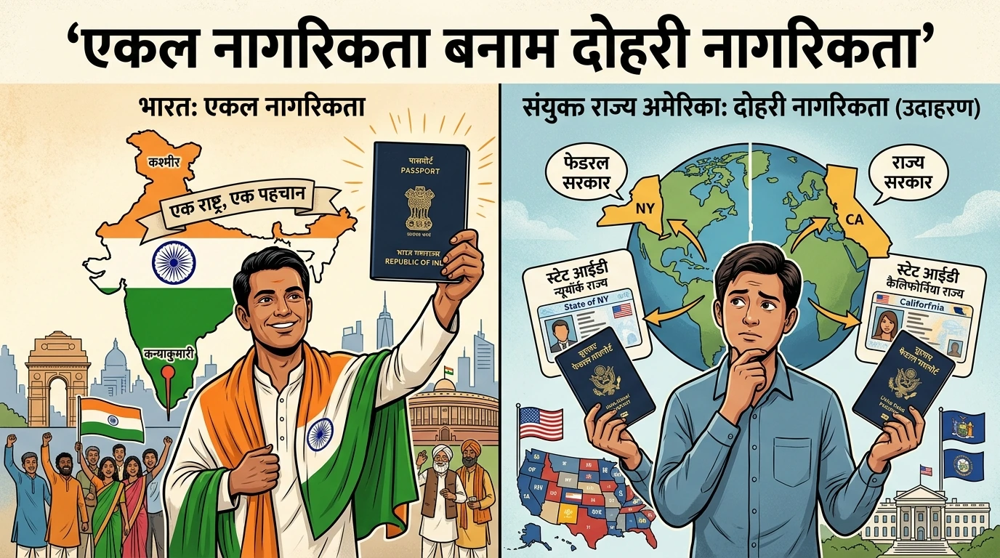
🎨 कार्टून विश्लेषण: एकल नागरिकता—अखंड भारत का संवैधानिक सूत्र
चित्र का मुख्य संदेश: कश्मीर से कन्याकुमारी तक एक ध्वज, एक संविधान और एक नागरिकता—'हम सब भारतीय हैं'।
सार्वभौमिक नागरिकता: शरणार्थी और राज्यविहीन लोगों का संकट
युद्ध, अकाल, गृहयुद्ध या धार्मिक उत्पीड़न के कारण जब लोग अपने देश से भागने को मजबूर होते हैं, तो वे शरणार्थी (Refugees) बन जाते हैं। राज्यविहीन (Stateless) लोगों के पास किसी भी देश की कानूनी नागरिकता नहीं होती।
वैश्विक मानवाधिकार और शरणार्थी संकट:
- मानवीय सहायता: संयुक्त राष्ट्र शरणार्थी उच्चायुक्त (UNHCR) के माध्यम से भोजन, आश्रय और चिकित्सा।
- भारत का उदार इतिहास: तिब्बती शरणार्थी, 1971 के बांग्लादेशी शरणार्थी और तमिल शरणार्थियों को आश्रय देने की परंपरा।
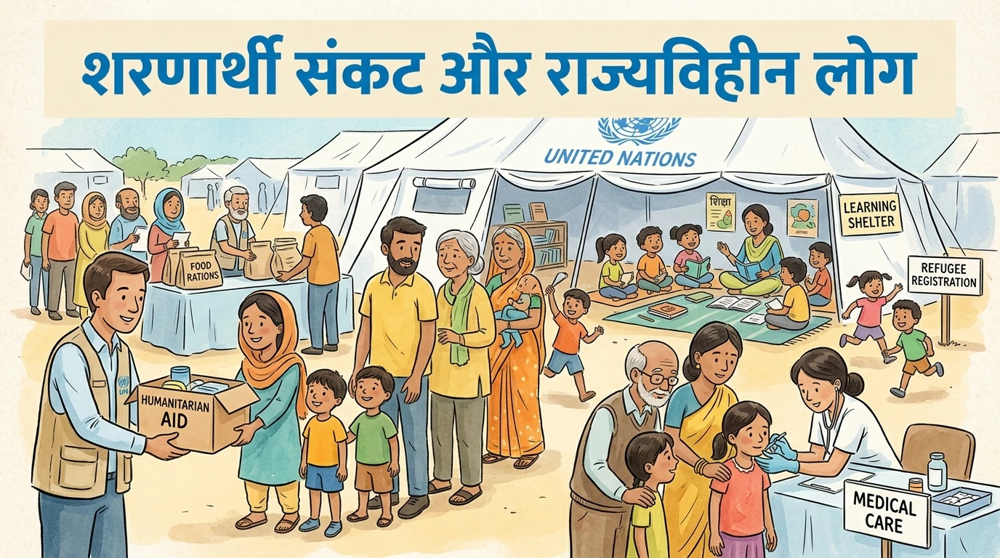
🎨 कार्टून विश्लेषण: शरणार्थी संकट—मानवीय करुणा और वैश्विक दायित्व
चित्र का मुख्य संदेश: बेघर और राज्यविहीन लोगों को सुरक्षा और मानवीय गरिमा देना पूरी मानव जाति का नैतिक कर्तव्य है।
विश्व नागरिकता की अवधारणा और साझा वैश्विक चुनौतियाँ
आज इंटरनेट, वायुमार्ग और संचार क्रांति ने दुनिया को एक 'ग्लोबल विलेज' (Global Village) बना दिया है। विश्व नागरिकता का विचार यह मानता है कि हम केवल अपने देश के ही नहीं, बल्कि इस पूरी पृथ्वी के नागरिक हैं।
📌 प्राचीन भारतीय आदर्श: "वसुधैव कुटुम्बकम्" — पूरी पृथ्वी ही हमारा एक परिवार है।
विश्व नागरिकता के प्रमुख आधार:
- सीमाओं के पार मानवीय सहानुभूति: किसी भी देश में प्राकृतिक आपदा (भूकंप, सुनामी) आने पर पूरे विश्व द्वारा सहायता।
- साझा मानवीय पहचान: नस्ल, रंग और राष्ट्रीयता से ऊपर उठकर मानवता को प्राथमिकता देना।
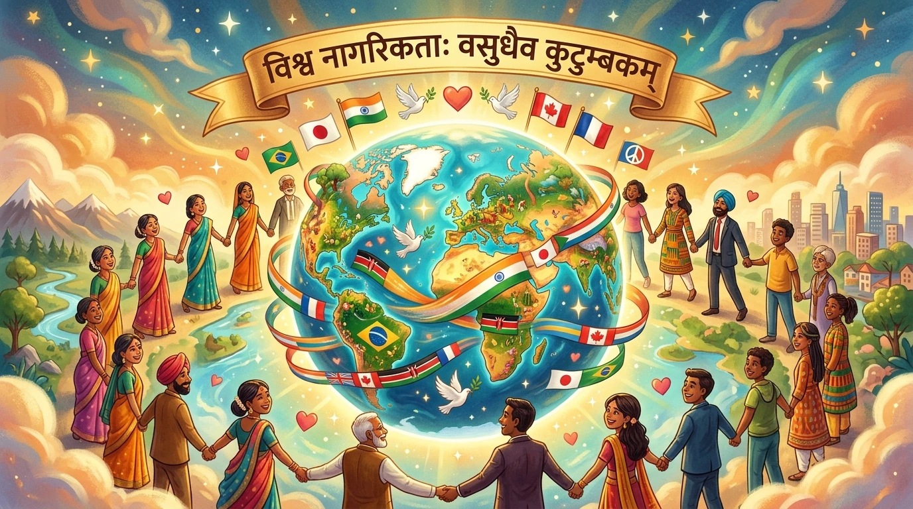
🎨 कार्टून विश्लेषण: विश्व नागरिकता—'वसुधैव कुटुम्बकम्' का वैश्विक संदेश
चित्र का मुख्य संदेश: पृथ्वी के सभी नागरिक हाथों में हाथ डालकर एक शांतिपूर्ण, सहअस्तित्व और प्रेमपूर्ण दुनिया का निर्माण करते हैं।
साझा वैश्विक समस्याओं का सामूहिक समाधान:
जलवायु परिवर्तन (Global Warming), ओजोन परत का क्षरण, महामारियां (जैसे कोविड-19) और आतंकवाद ऐसी समस्याएं हैं जो किसी एक देश की सीमाओं के भीतर नहीं रुकतीं।
- पर्यावरण संरक्षण: कार्बन उत्सर्जन कम करना और पेरिस जलवायु समझौते का पालन।
- स्वास्थ्य व टीके का समान वितरण: महामारियों से निपटने के लिए डब्ल्यूएचओ (WHO) के माध्यम से गरीब देशों की सहायता।
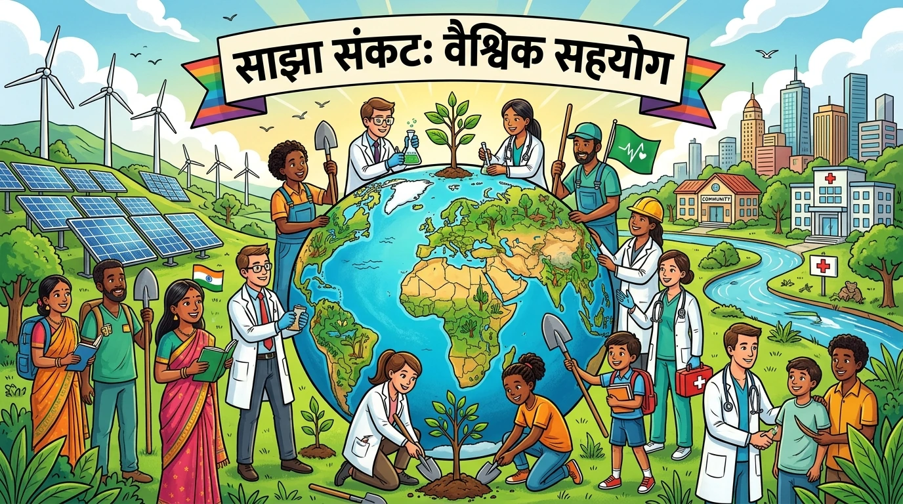
🎨 कार्टून विश्लेषण: साझा संकट—पर्यावरण और स्वास्थ्य के लिए वैश्विक एकजुटता
चित्र का मुख्य संदेश: प्रदूषण और महामारियां पासपोर्ट नहीं देखतीं; इनके समाधान के लिए सभी देशों को एक साथ मिलकर काम करना होगा।
नागरिकों के मौलिक कर्तव्य, डिजिटल नागरिकता एवं सक्रिय नागरिकता
42वें संविधान संशोधन (1976) द्वारा संविधान में स्वर्ण सिंह समिति की सिफारिश पर अनुच्छेद 51A के तहत 11 मौलिक कर्तव्य जोड़े गए। 21वीं सदी में डिजिटल तकनीक और सक्रिय नागरिक भागीदारी से लोकतांत्रिक नागरिकता और सशक्त हुई है।
नागरिक के प्रमुख राष्ट्रीय कर्तव्य (अनुच्छेद 51A):
- संविधान व राष्ट्रगान का आदर: राष्ट्रीय प्रतीकों और राष्ट्रीय ध्वज का सम्मान करना।
- देश की रक्षा व सेवा: आवश्यकता पड़ने पर राष्ट्र रक्षा के लिए तत्पर रहना।
- पर्यावरण व वन्यजीव रक्षा: वनों, झीलों, नदियों और वन्यजीवों का संरक्षण करना।
- सार्वजनिक संपत्ति की सुरक्षा: हिंसा से दूर रहना और सार्वजनिक संपत्ति को नुकसान न पहुंचाना।
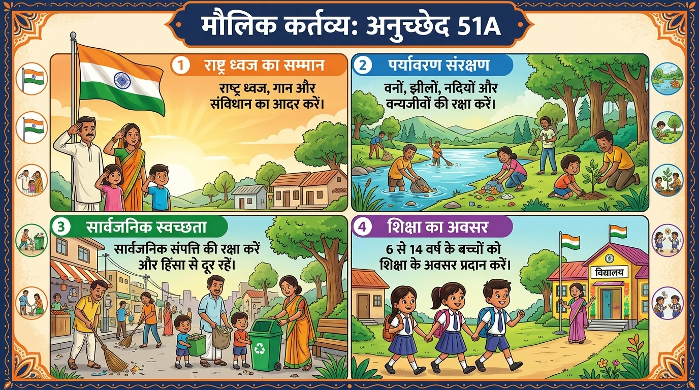
🎨 कार्टून विश्लेषण: अनुच्छेद 51A—अधिकारों के साथ राष्ट्र के प्रति कर्तव्य
चित्र का मुख्य संदेश: कर्तव्य ही वह आधारशिला हैं जिन पर अधिकार सुरक्षित और राष्ट्र मजबूत बनता है।
डिजिटल नागरिकता और ई-गवर्नेंस (Digital Citizenship):
- पारदर्शी ई-सेवाएं: घर बैठे प्रमाण पत्र, पासपोर्ट और सरकारी योजनाओं का लाभ।
- साइबर सुरक्षा व सत्यता: सोशल मीडिया पर फेक न्यूज और अफवाहों को न फैलाना तथा डिजिटल निजता का सम्मान करना।
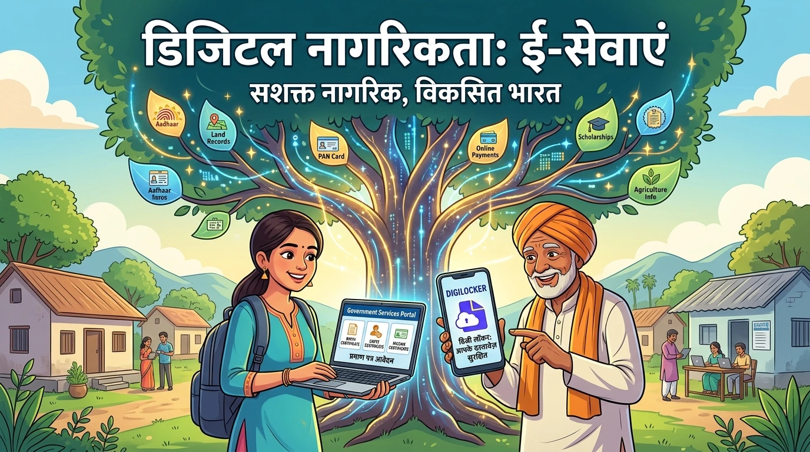
🎨 कार्टून विश्लेषण: डिजिटल नागरिकता—पारदर्शी, त्वरित और जिम्मेदार ई-सेवाएं
चित्र का मुख्य संदेश: डिजिटल तकनीक नागरिक को सशक्त बनाती है; इसके साथ साइबर सुरक्षा और सत्यनिष्ठा की जिम्मेदारी भी आती है।
सक्रिय नागरिकता और लोकतांत्रिक भागीदारी:
- ग्राम सभा व वार्ड बैठकों में भागीदारी: अपने क्षेत्र के विकास कार्यों में सुझाव देना।
- RTI व जनहित याचिका (PIL): भ्रष्टाचार पर नजर रखना और कमजोरों के अधिकारों के लिए आवाज उठाना।
- स्वच्छता व सामाजिक सेवा: समुदाय के साथ मिलकर रक्तदान, पौधारोपण और स्वच्छता अभियानों का नेतृत्व।
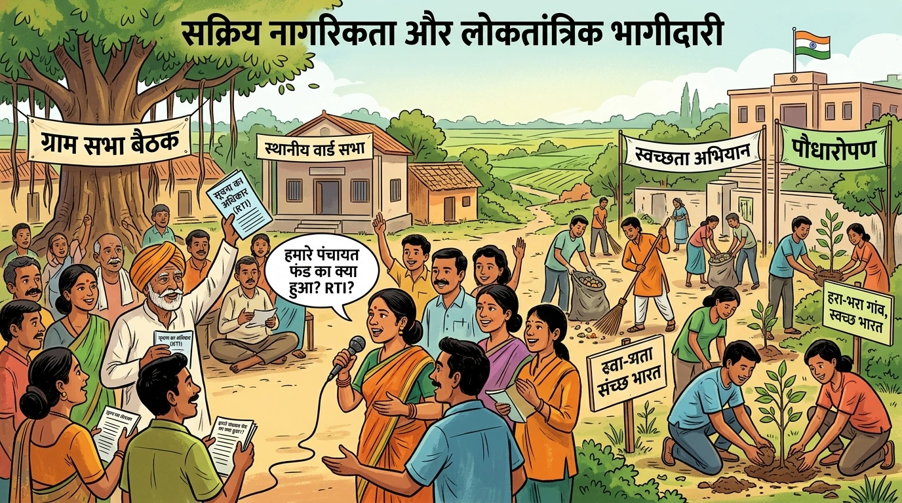
🎨 कार्टून विश्लेषण: सक्रिय नागरिकता—सशक्त समाज और जवाबदेह लोकतंत्र
चित्र का मुख्य संदेश: जागरूक और सक्रिय नागरिक ही लोकतंत्र के वास्तविक निर्माता और संरक्षक हैं।
अध्याय निष्कर्ष: "एक भारत, श्रेष्ठ भारत"—सशक्त नागरिकता ही राष्ट्र की आत्मा
नागरिकता वह धागा है जो भारत के 140 करोड़ लोगों को विभिन्न जातियों, भाषाओं और धर्मों के बावजूद एक सशक्त और अखंड राष्ट्र में पिरोता है।
अध्याय के सर्वोच्च निष्कर्ष बिंदु:
- समानता और बंधुता: प्रत्येक नागरिक के स्वाभिमान और गरिमा की सुरक्षा ही लोकतंत्र का सर्वोच्च लक्ष्य है।
- साझा भविष्य: जब देश का हर नागरिक अपने अधिकारों के प्रति जागरूक और कर्तव्यों के प्रति समर्पित होगा, तभी भारत विश्व गुरु बनेगा।
- सर्वोच्च आदर्श: "सत्यमेव जयते" एवं "एक भारत, श्रेष्ठ भारत"!
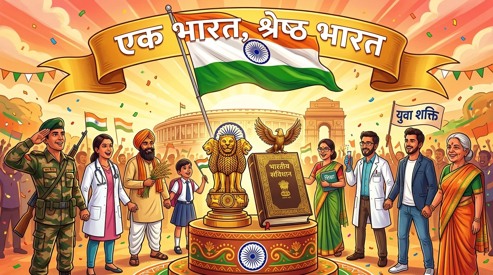
🎨 कार्टून विश्लेषण: अध्याय निष्कर्ष—'एक भारत, श्रेष्ठ भारत' का महासंकल्प
चित्र का मुख्य संदेश: विविधता में एकता ही भारत की सबसे बड़ी शक्ति है। जागरूक, समर्पित और संवेदनशील नागरिक ही विकसित और आत्मनिर्भर भारत की नींव हैं!